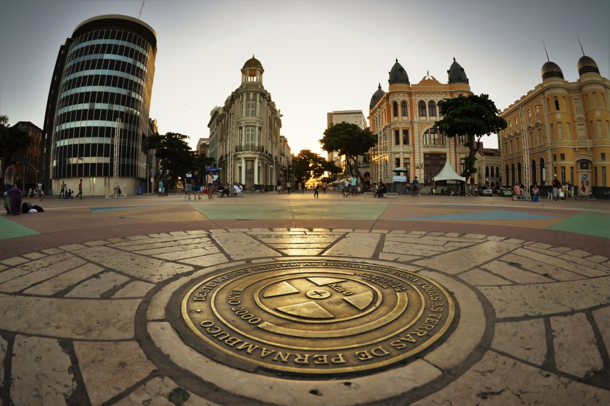

Recife, a capital de Pernambuco, irradia uma riqueza cultural que ressoa por todo o Nordeste brasileiro. Com suas raízes profundamente enraizadas na história, arte e tradições, esta cidade vibrante é um epicentro cultural dinâmico.
Desde sua arquitetura colonial até suas festas folclóricas animadas, Recife é um verdadeiro tesouro cultural. Sua importância transcende as fronteiras do estado, influenciando e enriquecendo a cena cultural de toda a região nordestina, tornando-se um farol de criatividade, diversidade e vitalidade para todos que a visitam.
Localizada na icônica região histórica do Recife Antigo, a Praça do Marco Zero é muito mais do que um simples ponto geográfico, ela representa o coração pulsante da cultura recifense e o ponto de partida simbólico de todas as jornadas em Pernambuco.
Como parte integrante da história e identidade da cidade, esta praça não só marca o início das medições das distâncias das estradas do estado, mas também serve como um espaço vibrante e multifacetado onde o passado encontra o presente. Rodeada por monumentos históricos, restaurantes, bares e uma atmosfera efervescente, é um local onde a arte, a música e a gastronomia se fundem em harmonia.
A Praça do Marco Zero é o ponto de encontro de culturas, ideias e pessoas, refletindo a diversidade e a vitalidade desta região. É o lugar onde as histórias começam a ser escritas, onde os visitantes mergulham na riqueza cultural de Pernambuco e onde os recifenses celebram sua identidade única e sua rica herança.
Conforme informado pela página Quinto andar Em 1999, a Praça do Marco Zero passou por uma transformação drástica. A estátua do Barão do Rio Branco e o Marco Zero foram mudados de lugar, um pouco mais para o canto da praça.
Com isso, além de ser o centro geográfico de Pernambuco, o Marco Zero passou a ser o centro de uma obra de arte do célebre pintor pernambucano Cícero Dias, um dos mais importantes nomes do modernismo brasileiro: a Rosa dos Ventos.
Com 20 metros de diâmetro e formada por pedras de quartzo e granito com pigmentação colorida, a Rosa dos Ventos de Cícero Dias se tornou mais uma das grandes atrações da Praça do Marco Zero.